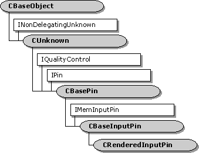

description: The CRenderedInputPin class is a base class for implementing an input pin on a renderer. ms.assetid: 644dc6ef-eefa-4dfa-a27e-cab690b6e1db title: CRenderedInputPin class (Amextra.h) ms.topic: reference ms.date: 4/26/2023 topic_type:
[The feature associated with this page, DirectShow, is a legacy feature. It has been superseded by MediaPlayer, IMFMediaEngine, and Audio/Video Capture in Media Foundation. Those features have been optimized for Windows 10 and Windows 11. Microsoft strongly recommends that new code use MediaPlayer, IMFMediaEngine and Audio/Video Capture in Media Foundation instead of DirectShow, when possible. Microsoft suggests that existing code that uses the legacy APIs be rewritten to use the new APIs if possible.]

The CRenderedInputPin class is a base class for implementing an input pin on a renderer. This class is designed for renderer filters that do not derive from the CBaseRenderer class. (Filters that derive from CBaseRenderer should use the CRendererInputPin class for the input pin.)
To use this class, you must do at least the following:
You can use this class in a renderer that has more than one input pin. This class inherits the CBaseInputPin class.
| Protected Member Variables | Description |
|---|---|
| m_bAtEndOfStream | Indicates whether the end of the stream was reached. |
| m_bCompleteNotified | Indicates whether the pin has sent an EC_COMPLETE event to the Filter Graph Manager. |
| Public Methods | Description |
| Active | Notifies the pin that the filter is now active. |
| CRenderedInputPin | Constructor method. |
| Run | Notifies the pin that the filter is now running. |
| IPin Methods | Description |
| EndFlush | Ends a flush operation. |
| EndOfStream | Notifies the pin that no additional data is expected until the filter receives a new run command. |
| Requirement | Value |
|---|---|
| Header | Amextra.h (include Streams.h) |
| Library | Strmbase.lib (retail builds); Strmbasd.lib (debug builds) |